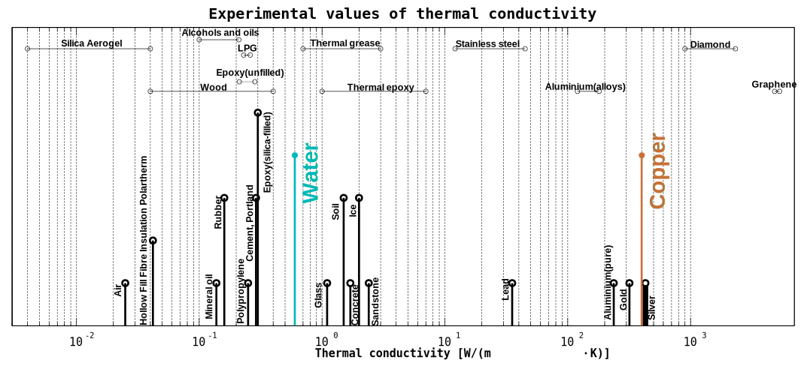
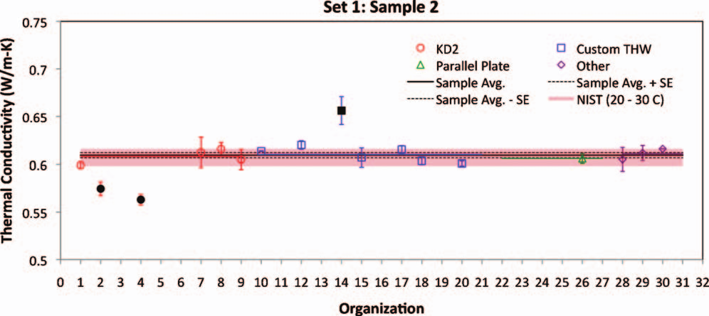

Can nanofluids exhibit "anomalous" thermal conductivity?
21/02/2018, University of Strathclyde, Chemical & process engineering
Marcus N. Bannerman
School of Engineering, University of Aberdeen
m.campbellbannerman@abdn.ac.uk
University of Aberdeen
University of Aberdeen
- Ancient university, King's college established in 1495, fifth in the UK after Oxford (1167), Cambridge (1209), St Andrews (1410), and Glasgow (1451).
- 5 Nobel prize winners: insulin treatment, crystalline electron diffraction, and partition chromatography.
- James Clerk Maxwell was here, but was fired in 1860 when Marischal college (Est. 1593) which employed him merged with King's college.
- Currently has around 16,000 students.
- A general school of engineering with over 1000 UG students.
Motivation
Water is an excellent heat-transfer medium, but has a relatively poor thermal conductivity, particularly compared to solids such as copper.
- Nanofluids are an attempt to "alloy" the properties of a immiscible material with a base liquid phase.
- By breaking the imiscible phase into nanometer sized particles, non-abrasive solid suspensions or stable emulsions can be made.
- Although the immiscible material may be a liquid, metallic solids are very interesting due to their high thermal conductivity (e.g., copper/alumina oxide).
- Initial results for copper in ethylene glycol reported in 2001 were promising …
- Measured enhancements of 40% over the base fluid for 0.2% v/v seemed improbable, leading to them being termed “anomalous.”
- An explosion of research followed, with conflicting and contradictory results being published. Even this initial paper demonstrates the dramatic effects of adding a small amount of acid to stabilize the suspension.
- Variations in manufacturing, dispersion, measurement, and delay all meant many results are unrepeatable or have large uncertainties.
-
This came to a head in 2009, where the International
Nanofluid Property Benchmark Exercise prepared
standard samples and issued them to multiple
organizations for testing.
J. Buongiorno, D. C. Venerus, N. Prabhat, T. McKrell, J. Townsend, R. Christianson, Y. V. Tolmachev, P. Keblinski, Lin-wen Hu, J. L. Alvarado, I. C. Bang, S. W. Bishnoi, M. Bonetti, F. Botz, A. Cecere, Y. Chang, G. Chen, H. Chen, S. J. Chung, M. K. Chyu, S. K. Das, R. Di Paola, Y. Ding, F. Dubois, G. Dzido, J. Eapen, W. Escher, D. Funfschilling, Q. Galand, J. Gao, P. E. Gharagozloo, K. E. Goodson, J. G. Gutierrez, H. Hong, M. Horton, K. S. Hwang, C. S. Iorio, S. P. Jang, A. B. Jarzebski, Y. Jiang, L. Jin, S. Kabelac, A. Kamath, M. A. Kedzierski, L. G. Kieng, C. Kim, J.-H. Kim, S. Kim, S. H. Lee, K. C. Leong, I. Manna, B. Michel, R. Ni, H. E. Patel, J. Philip, D. Poulikakos, C. Reynaud, R. Savino, P. K. Singh, P. Song, T. Sundararajan, E. Timofeeva, T. Tritcak, A. N. Turanov, S. Van Vaerenbergh, D. Wen, S. Witharana, C. Yang, W.-H. Yeh, X.-Z. Zhao, and S.-Q. Zhou
"A benchmark study on the thermal conductivity of nanofluids",
J. Appl. Phys., 106, 094312 (2009) - All samples were blind, organizations did not know what they were testing.
- Even the results for deionized water had some outliers: 
- Neglecting the outliers, most results for water-based nanofluids agreed within 5%.
- Are these consensus results anomalous though? What simple limits can we generate?
- The upper/lower limits possible in continuum models are series and parallel resistance, and most data (including from the benchmark study) fits between these limits1.
- Maxwell also developed in 1873 (post-Aberdeen) an expression for the electrical conductivity of a two-component mixture which also works equally well for heat. It is based on the solution for the temperature profile around an isolated sphere.
- Most results are also within Maxwell's tighter limits, thus we now define any results outside of Maxwell's bounds as “anomalous”, and outside of the series/parallel bounds as “truly anomalous”.
- There are still results which are outside these so-called “classical” bounds2; however, the results do have large scatter, or are for ill-defined systems (olive oil/water?). More conclusive proof is needed that these truly anomalous results are even possible.
Conclusions from history:
- Results are surprising, but the majority are within classical/continuum limits (not truly anomalous) and most are within Maxwell's limits (not even anomalous).
- Only molecular (non-continuum) models can demonstrate truly anomalous results.
Questions from history:
- Are anomalous effects possible? If so, why haven't we seen it more conclusively? Is it difficult to measure anomalous thermal conductivity?
- Is the scatter in the current anomalous results due to poor experimental procedure, high-difficulty, and/or some phenomena?
The Binary Hard Sphere Model
- There are many Brownian/interfacial models, which have inconsistencies, here we start from the ground up.
- Simplest possible binary molecular model, hard spheres
at near-ideal densities/pressures.

- Non-equilibrium molecular dynamics, with predictions from Enskog theory (3rd Sonine).
- For $\sigma_1/\sigma_2=10$ and $m_1/m_2=1000$ (see right), thermal diffusion in response to a heat gradient is evident! First result is that conduction in binary mixtures is both transient and inhomogeneous in concentration.
Issue: The definition of thermal conductivity
An observational definition of thermal conductivity is as follows: \begin{align*} \vec{q} = - k\, \nabla T \end{align*} Simple experiments (parallel plates) and NEMD use this directly, others, such as THWT use transient results built from this model (which appears dangerous given the presence of transient thermodiffusion).
For mixtures, thermal diffusion also plays a role: \begin{align*} \vec{q} &= L_{uu}\,\vec{X}_u + \sum_a L_{ua}\,\vec{X}_a \end{align*} where $L_{uu}$ is also a thermal conductivity, $\vec{X}_u$ is the heat "force" which has a relatively constant definition, \begin{align*} \vec{X}_u=-T^{-1}\nabla\,T \end{align*} Depending on how the diffusion force $\vec{X}_a$ is defined changes the definition of $L_{uu}$ and $\vec{L}_{ua}$, which is the thermal diffusivity.
There are multiple definitions of thermal conductivity, but regardless of which is chosen $L_{uu}\,T^{-1}\neq k$.
Consider the expression for the mass flux: \begin{align*} \vec{J}_a &= L_{ua}\,\vec{X}_u + \sum_b L_{ab}\,\vec{X}_b \end{align*} where $L_{ab}$ is a mutual diffusion coefficient.
Solving for a "steady state" where $\vec{J}_a = 0$, and using this to eliminate $\vec{X}_a$ in the heat flux yields the following expression: \begin{align*} \vec{q} &= T^{-1}\left(L_{uu} - \frac{L_{au}^2}{L_{aa}}\right) \nabla\,T\\ &=-\lambda\,\nabla\,T \end{align*} where the “steady-state” thermal conductivity $\lambda$ has been implicitly defined.
$\lambda$ is independent of the definition of $\vec{X}_a$, but may depend on temperature and concentration, both of which vary across a conducting system.

Conclusions
- The steady-state thermal conductivity $\lambda$ is a close approximation of the observed thermal conductivity $k$.
-
Binary mixtures of hard-spheres display
anomalous thermal conductivities outside
classical theory:
Classical limits can be broken. - Most of the “interesting” behavior is for light, but large, nanoparticles (bubbly fluids?). But anomalous dehancements are close to realistic geometries.
Ongoing work
- Can we correlate real nanofluids using Enskog theory? The unphyscial heat capacity of large hard sphere particles must be addressed.
- Is there something to the large peak for $L_{uu}$, is there a transient super enhancement?
- This can be tested using coupled kinetic theory/hydrodynamic simulations with oscillating temperature gradients, initial results are being collected.
Coupled kinetic theory and hydrodynamic simulation of two heated walls ($k_B\,T=\{1,\,1.5\}$) ten NP diameters apart contacting a size ratio 1:0.5, mass ratio 1:0.5, $\rho=0.2$, $k_B\,T=1$ system.
Thanks
- Thank you to:
- Craig Moir (Aberdeen/Curtin) PhD student.
- Leo Lue (Strathclyde).
- You for your attention
Appendix

Equilibrium molecular dynamics simulations of binary mixture of hard-spheres, 10:1 size ratio, with 1000:1 mass ratio approximating a nanofluid.
10:1 size, 1000:1 mass, binary HS at constant volume fraction $\phi$ or constant pressure $p$. Symbols are MD and lines are from kinetic theory.1
- Truly anomalous results exist in $L_{q,q}$ for hard-spheres, and all nanofluids at least share key features with this system.
- Nanoparticles (in this case) are insulating. If $L_{qq}$ is a useful definition then this is an enhancement like the olive-oil/water system.
- Analyzing the kinetic theory expressions, $L_{qq}$ has a dominant term: \begin{align*} \vec{J}_q \approx\left(C_V^{Nano} - C_V^{Base}\right)k_B\,T\,L_{Nano,q} T^{-1}\nabla T \end{align*}
- Large mass difference (as $C_V=5\,m/2$), coupled with thermophoresis causes heat pumping effect IF $L_{qq}$ is relevant.
Graphical illustration of heat flux via thermophoresis. Momentum conservation causes equal and opposite fluxes of mass. If there is a heat capacity imbalance, this results in a flux.

"Light" nanofluids (size 2:1, mass 1:6) have anomalous dehancements in $\lambda$ while anomalous enhancements appear in $L_{q,q}$.